Hochschule Pforzheim · Winter Semester 2026/27
The New Frontiers of AI: From Perception to Agentic Intelligence
Final Project Presentations & Anonymous Course Feedback — Course Report (MMI5194)
Instructor: Prof. Dr. Pin Luarn (National Taiwan University of Science and Technology)
Course dates: 16–27 November 2026 · Final presentation session: Friday, 27 November 2026
Class: 47 students (MBA, MDBM, MMI, MCCM and MLiCS programmes)
About this report. The course The New Frontiers of AI took students along a four-step arc — Perception AI, Generative AI, Agentic AI, and Personal AI Agents — with a strong emphasis on learning by building. In the final session on 27 November 2026, students presented the personal AI applications they had built as their final projects. Part 1 of this report documents the fourteen presentations given that day, in presentation order, with photographs taken during the session. Part 2 analyses the anonymous end-of-course feedback form (two open questions, 20 responses) that students completed after the presentations.
Part 1 — Final Project Presentations
The fourteen projects span consumer apps, workplace automation, public-sector tooling and creative uses of perception AI. A common thread runs through them: almost every student moved beyond using a chatbot and instead built a working system — an agent, an automated pipeline, or an AI-powered application — for a concrete problem in their own professional or personal context.
| # | Student | Project | Core technology |
|---|
| 1 | Valeria Yagui Nishii | Review Insights Dashboard | n8n, Gemini API, Streamlit |
| 2 | Anchal Tewari | Document Intake for German Municipal Offices | Document AI, web app (Civic Desk) |
| 3 | Amit Sharma | StudyLens | Multi-agent loop, Telegram |
| 4 | Chirag Milan Gupte | AI Calorie Tracker | Gemini vision |
| 5 | Alejandra González Ibarra | SAM OneAI Skill | Knowledge skill, SAP Joule Work |
| 6 | Nur Hidayah Binti Ahmad | Packaging Price Watch | Python engine, scheduled Claude agent |
| 7 | Mitthu Ghosh | AgriTech Performance & Operations Dashboard | Gemini 2.5, dashboard analytics |
| 8 | Bashar Alkassis | NOMAD — travel itinerary companion | Agentic re-planning prototype |
| 9 | Gayathri Sekar | FridgeChef AI | Multimodal vision, recipe generation |
| 10 | Alesia Musabelliu | MIRRA — AI beauty companion | Five-agent concept design |
| 11 | Pascal Müller | Pforzheim Student Copilot | Cue agent, skills, WhatsApp |
| 12 | Claribel Crystal Lupi | Job Application Autopilot | Browser extension, Claude, Sheets |
| 13 | Manuel Lowien | Hand Music | MediaPipe hand tracking |
| 14 | Aaron Ipser | DB Navigator Next Gen | HAFAS routing data, AI news feed |
1. Valeria Yagui Nishii — Review Insights Dashboard
Student ID 334789 · MDBM · Portfolio: m334789.github.io · App: review-insights-final-project.streamlit.app

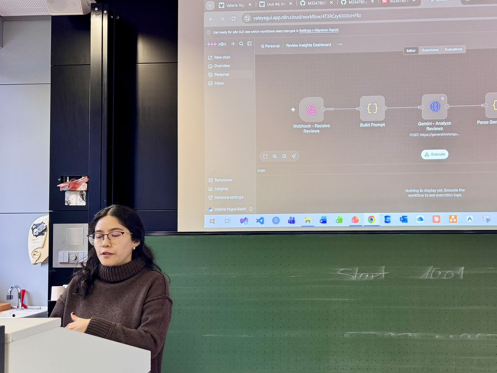
The project. Businesses receive more customer reviews than anyone can read. Valeria built a pipeline that turns a raw review file into a management-ready insight dashboard. In her Streamlit app, the user uploads a CSV of reviews (columns: Date, Rating, Review) or pastes review text, and presses “Analyze reviews”. The app sends the reviews through a webhook into her n8n workflow, which builds a prompt and calls the Gemini API to analyse sentiment and extract recurring issues; the parsed results flow back into the dashboard.
What it produces. A sentiment trend chart (switchable by day, week or month), a sentiment-share donut, and a “Top 3 issues” panel with mention counts and a written summary. In her demo data — online reviews of pet harnesses — 37% of reviews were positive, and the top issues were product quality concerns (5 mentions), inaccurate sizing (4) and shipping delays and problems (4); customers liked the harness design but questioned sizing, delivery and value for money. Results can be downloaded. The app is deployed on Streamlit Cloud, with the code in her GitHub repository.
Course concepts applied: Generative AI for text analysis · workflow automation with n8n · API integration · deploying a working web app (GitHub + Streamlit).
2. Anchal Tewari — Document Intake for German Municipal Offices
Student ID 335729 · MBA · App: “Civic Desk” Document Intake Desk (hosted on chatgpt.site)
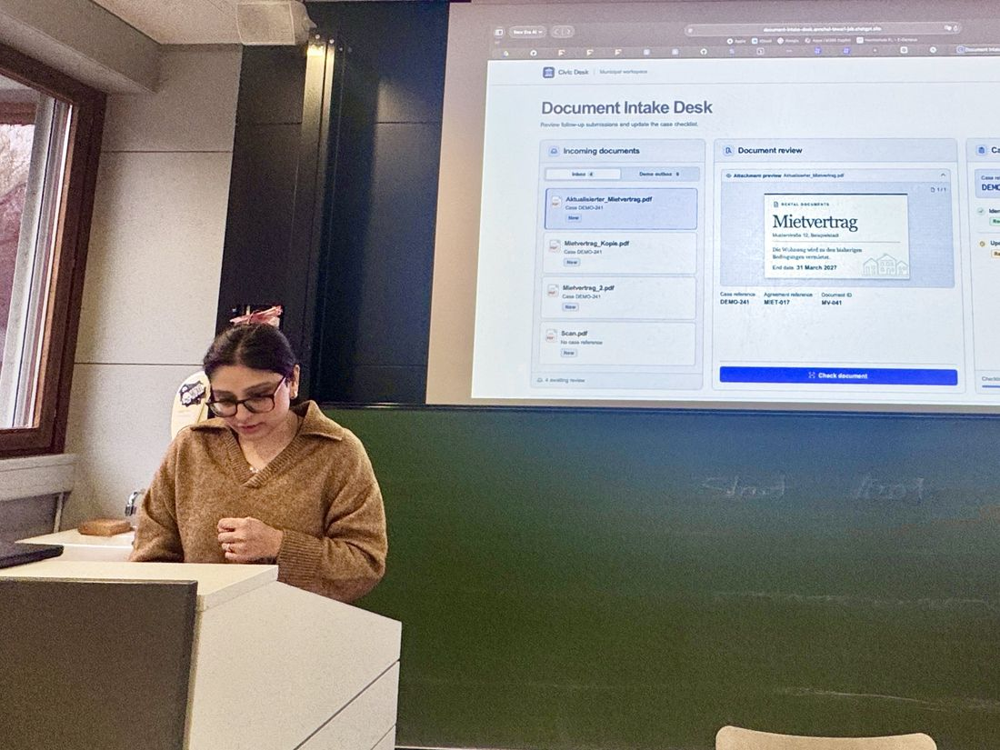

The project. Anchal’s presentation opened with a deceptively simple question: “Which case does Scan.pdf belong to?” German municipal offices receive large numbers of follow-up document submissions (Nachreichungen) — often a bare email with a scanned attachment, no subject line, and the case reference (Aktenzeichen) field left empty. Before anything can be filed, a clerk has to work out which case the document belongs to and what must be checked.
What she built. A working “Document Intake Desk” with three panels: an inbox of incoming documents, a document review pane, and the case checklist. In her demo inbox, three rental-agreement PDFs already carried case reference DEMO-241, while the fourth — Scan.pdf — had none. The review pane extracts structured fields from the document (case reference DEMO-241, agreement reference MIET-017, document ID MV-041, contract end date 31 March 2027), and a “Check document” action validates the submission against the case checklist before filing.
Course concepts applied: Perception/document AI (reading scanned documents) · structured information extraction · agentic workflow design for public administration.
3. Amit Sharma — StudyLens
Student ID 335692 · MBA · Portfolio: amitvedvyas-bit.github.io

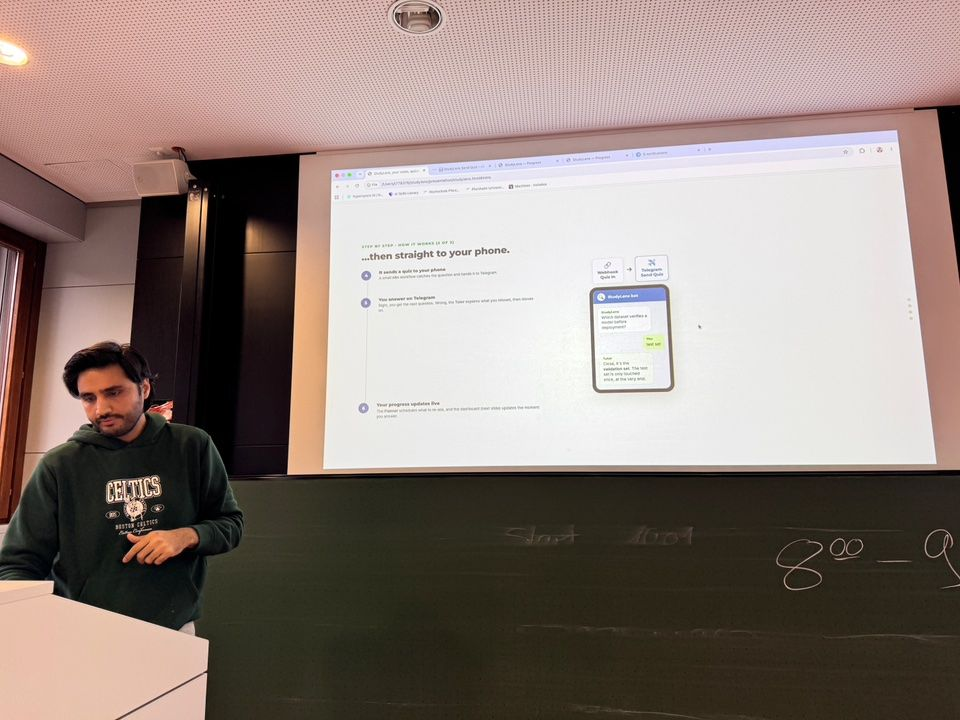
The project. StudyLens is a personal revision agent built around a simple promise: “Your notes, quizzing you back.” The student photographs or uploads lecture notes or slides; from there an agent loop takes over. The system reads the material, writes quiz questions — and checks its own questions against the notes before using them (his example: “Which dataset verifies a model before deployment? — the validation set”) — then delivers the quiz to the student’s phone over Telegram. Answers given in the chat are graded; a tutor agent explains what was missed, and a planner agent updates the student’s progress.
Architecture. Amit emphasised that taking a photo and reading it are things any tool can do; the real work is the loop that reacts to the student’s answers. His design uses four specialised agents passing the work around — reading, question generation and checking, tutoring, and planning/tracking — an explicit multi-agent system rather than a single chatbot.
Course concepts applied: Multi-agent systems · personal AI agents · messenger integration (Telegram) · self-checking generation.
4. Chirag Milan Gupte — AI Calorie Tracker
Student ID 336215 · MBA · Portfolio: 336215.github.io
The project. A direct application of perception AI to everyday life: snap or upload a photo of your food, and Gemini’s vision model identifies the dish and estimates its calories. The app keeps a daily log (“Today’s log”) with a running kcal-per-day counter, and offers Camera, Upload and Identify actions. Chirag demonstrated it live in class, holding an orange up to the camera while the app analysed it — a small moment that made the perception-AI unit tangible for the whole room.
Course concepts applied: Perception AI · multimodal vision models · personal health tooling.
5. Alejandra González Ibarra — SAM OneAI Skill
Student ID 335169 · MDBM · Portfolio: m335169.github.io
The project. Alejandra tackled a classic enterprise problem: employees waste hours hunting through SharePoint for authoritative answers. She built SAM OneAI as a reusable skill for Joule Work Desktop — installing it is as simple as uploading the SKILL.md file. The skill understands the question, routes it to the right SAM knowledge space (SPM Portfolio Management, SCM Compliance, SFM Financial, TDM Tools & Data, TMO Transformation Office, or SAM General), reads the trusted content, and returns a sourced answer in seconds instead of a pile of search results.
Why it matters. Of all the projects, this one most directly showed the course’s “skills” idea inside a real corporate stack: knowledge work packaged as an installable, governed capability rather than an ad-hoc chat with a model.
Course concepts applied: Agent skills (SKILL.md) · retrieval over trusted knowledge bases · enterprise AI assistants (SAP Joule).
6. Nur Hidayah Binti Ahmad — Packaging Price Watch
Student ID 335033 · MDBM · Portfolio: m335033.github.io
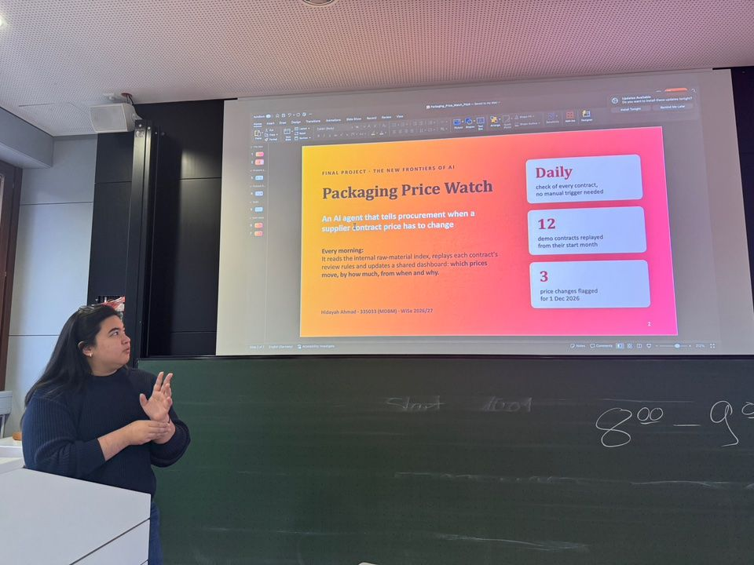

The problem. Packaging contracts are typically indexed: when a raw-material index moves beyond an agreed window, the contract price must change. In practice, buyers collect index values manually every month and check every contract by hand — slow, error-prone work in which missed decrease cycles mean silently overpaying, and sheer volume creates decision fatigue.
What she built. A four-step system designed so that humans only touch the decisions. (1) Procurement maintains the raw data — an Excel index tracker and contract list — a few minutes of human work per month. (2) A review engine written in Python (all calculations in code, covered by 20 tests) applies the timing windows, weighted changes, triggers and data checks, driven daily at 07:00 by a scheduled Claude agent. (3) A shared dashboard updates automatically: every contract’s status, the flagged price changes with their drivers, and a draft supplier notice. (4) Buyers review only the flagged cases, agree the new price with the supplier, and approve before anything is sent. Her timing rule: a window ending in month M is reviewed when the index is published in M+1, and the new price applies from the 1st of M+2. In the demo replay of 12 contracts, the engine flagged three price changes for 1 December 2026 (+7.89%, −6.00%, +5.12%).
Course concepts applied: Scheduled agents · human-in-the-loop automation · code-based calculation with tests · dashboards as agent output.
7. Mitthu Ghosh — AgriTech Performance & Operations Dashboard
Student ID 335632 · MBA · Portfolio: 335632.github.io
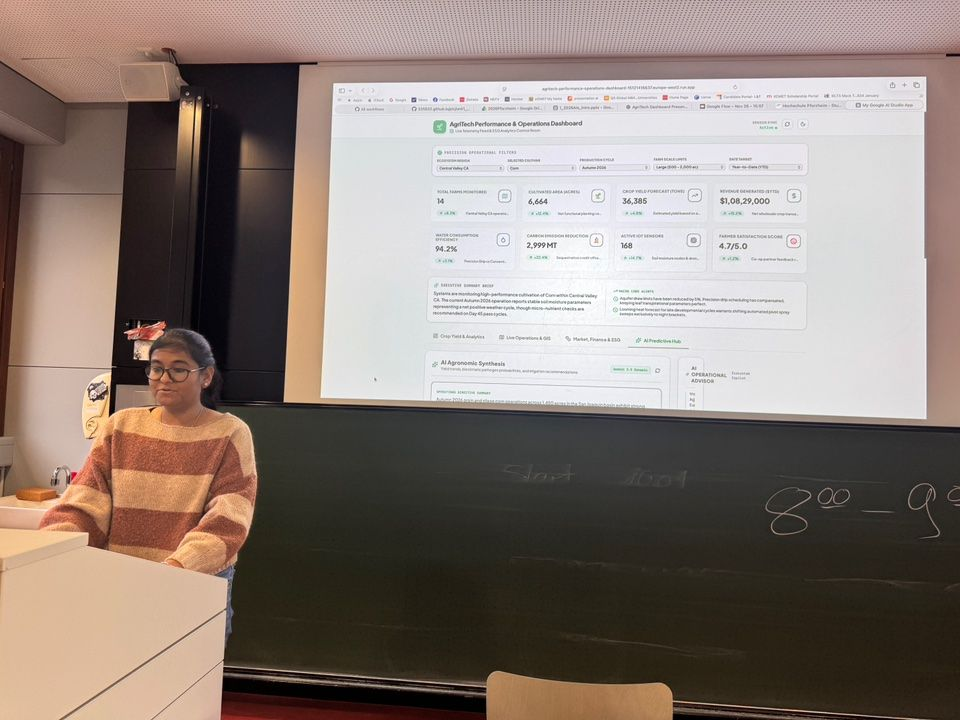

The project. Mitthu built a smart-farming “control room” for a scenario of corn production in California’s Central Valley (Autumn 2026). Interactive filters — region, cultivar, growing cycle, farm scale from micro to mega-farm, and date range — drive every KPI on the page: 14 farms and 6,664 acres monitored, a yield forecast of 36,385 tons, water efficiency of 94.2%, a carbon reduction of 2,999 MT, 168 active IoT sensors (soil moisture and weather stations), and farmer satisfaction of 4.7/5. “Farm Care Alerts” pair each problem with a countermeasure: an AquaFlow draw limit of −5% compensated by precision drip scheduling, and forecast heat answered by shifting automated spray sweeps to the night.
The AI layer. The “AI Predictive Hub”, powered by Gemini 2.5, produces an “AI Agronomic Synthesis”: an executive summary (1,450 acres of dual-purpose corn, yield +4.8% versus the regional baseline), a bioclimatic risk rated HIGH (a San Joaquin Valley heat dome — 14 days above 104 °F, relative humidity below 18%), a pathogen risk rated MEDIUM (a Southern Corn Rust model at 42%, with preventive triazole fungicide recommended for overhead-irrigated zones), an irrigation advisory (subsurface drip at 115% of baseline ETo), and a profit estimate of +$140 per acre net margin with pumping energy down 14%. A conversational AI Operational Advisor answers follow-up questions. Tabs cover Crop Yield & Analytics, Live Operations & GIS, Market, and Finance & ESG.
Course concepts applied: Generative AI for synthesis and advisory · data dashboards · IoT/perception data as agent input · decision support.
8. Bashar Alkassis — NOMAD
Student ID 335061 · MDBM · Portfolio: 335061.github.io

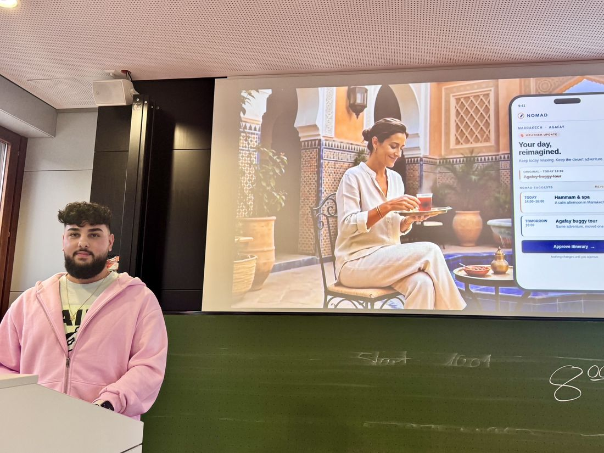
The project. NOMAD — tagline “Your trip. Still on.” — is an AI travel companion for city breaks built around one principle: it re-plans around disruption, but it never touches your fixed bookings, and nothing changes until you approve. The user states a destination, dates and the kind of day they like (culture, local food, outdoors, slow mornings); NOMAD builds the itinerary and marks fixed bookings — in the demo, a 13:00 lunch reservation in Marrakech — as protected.
Disruption handling. Two scenarios carried the demo. When the weather turns, the 10:00 Agafay desert buggy tour is moved to the next day and replaced today by a hammam and spa afternoon — “Your day, reimagined”: the adventure is kept, the day stays relaxing. When a museum turns out to be closed on arrival, NOMAD proposes a replacement stop (a courtyard gallery, open, 12 minutes’ walk) while the 13:00 lunch reservation stays exactly where it was. Bashar also designed a proper evaluation: a study with 12 participants and two matched closure scenarios, comparing manual re-planning (maps, search and memory) against NOMAD on speed, accuracy, confidence and cognitive load, with the order varied to cancel learning effects. The prototype ships with 20 curated city-break destinations and is transparent about being a prototype — the slides note that venue availability in the demo is simulated.
Course concepts applied: Agentic planning and re-planning · human-in-the-loop approval · product and evaluation design.
9. Gayathri Sekar — FridgeChef AI
Student ID 333080 · MBA · Portfolio: 333080.github.io

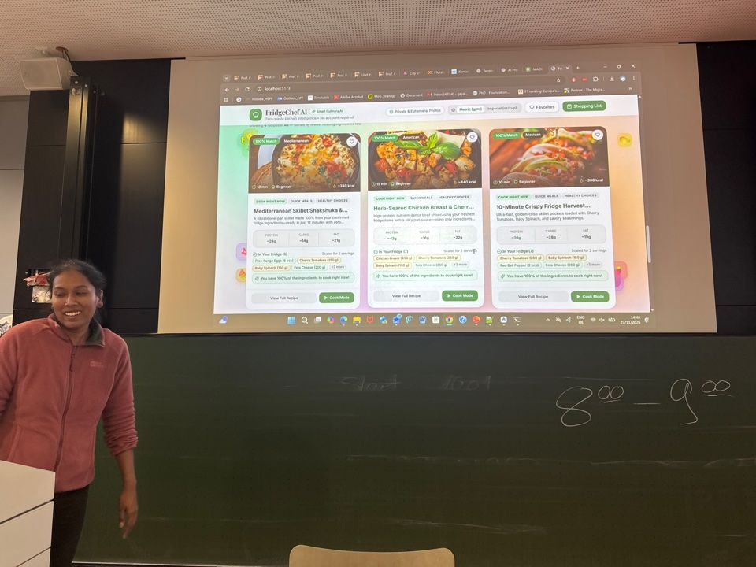
The project. FridgeChef AI starts from a question everyone knows: “What’s in your fridge? Snap a photo. Discover delicious meals.” Step 1 is a multimodal vision scan: the user uploads photos of the fridge and counter from several angles — shelves, crisper drawers, counter — with images compressed on the client side before analysis. The system identifies the ingredients it can see, the user adjusts preferences (dietary requirements, units in metric or imperial), and the app generates recipe cards.
What it produces. Each card shows a match score against the ingredients actually on hand (the three demo dishes — a Mediterranean skillet shakshuka, herb-seared chicken breast with cherry tomatoes, and a 10-minute Mexican-style “fridge harvest” — all scored 100%), cooking time, difficulty, calories and protein/carbs/fat, plus an itemised “In Your Fridge” list with quantities (six free-range eggs, 250 g cherry tomatoes, 150 g baby spinach, 200 g feta) and the reassurance “You have 100% of the ingredients to cook right now!”. Features include Favourites, a Shopping List, and one-click “View Full Recipe” and “Cook Mode”. Privacy is treated as a feature, not a footnote: the design stresses “Private & Ephemeral Photos”, and preset sample fridges (Mediterranean Fridge, Asian Stir-Fry Counter, High-Protein Shelf) let anyone try the flow without uploading a real photo.
Course concepts applied: Perception AI (multimodal image understanding) · generative AI for recipe creation · consumer app and privacy design.
10. Alesia Musabelliu — MIRRA
Student ID 335076 · MDBM · Portfolio: 335076.github.io
The project. MIRRA is an agentic AI personal beauty companion, presented as a concept introduction (five slides) built on three verbs: Recognize. Personalize. Adapt. The problem she identified is familiar to anyone standing in a cosmetics aisle: too many products to choose from, confusing ingredient combinations, and routines that never adapt when skin or needs change.
The design. Rather than one monolithic assistant, MIRRA is a team of five agents coordinated by an Orchestrator: a Skin Intelligence agent that understands the user’s skin, an Ingredient Guardian that checks products and possible ingredient conflicts, a Routine Architect that builds the morning and evening routines, and a Reflection Agent that reviews results and adapts the routine. Her stated vision: help users understand the products they own, create routines based on individual needs — using the camera to recognise products — adapt recommendations when needs change, and keep users in control of their skincare decisions. The goal, in her words, is to combine perception, reasoning and adaptation in one companion — a neat summary of the course’s own arc.
Course concepts applied: Multi-agent architecture · perception (product recognition) · personal agents that adapt over time.
11. Pascal Müller — Pforzheim Student Copilot
Student ID 325712 · MMI (Master Marketing Intelligence) · Portfolio: paelus.github.io · Dashboard: paelus.github.io/student-copilot
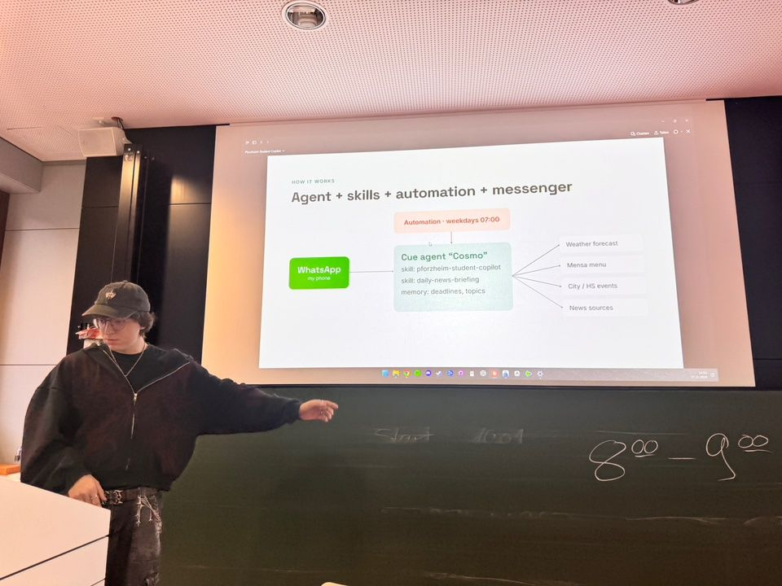

The problem. A student’s morning is spread across five apps and three websites — weather, the Mensa menu page, Moodle and email deadlines, city events, news — with no single overview, so deadlines that live in heads, notes and inboxes slip. The one app he opens anyway, every morning, is WhatsApp.
What he built. A personal study assistant that lives in WhatsApp, built on a Cue agent named “Cosmo” with two custom skills (pforzheim-student-copilot and daily-news-briefing) and persistent memory. On weekdays at 07:00 it sends a morning brief: the Pforzheim weather with what-to-wear advice for the ride, today’s Mensa menu with its source, his deadlines for the next seven days, events in Pforzheim and at the university, and two news stories on his chosen topics. All day, WhatsApp commands manage the system — brief, mensa, weather, topics, deadline <task> <date>, deadlines, done, remind <text> <time> — while deadlines and news topics are kept in the agent’s memory between chats. A web dashboard mirrors the same data with live weather, a deadline countdown and a brief preview. The live demo used the real brief from Wednesday 26 November, which had arrived by itself at 07:06. Pascal closed by mapping his build onto six building blocks from the course: agent, skills, scheduled task, messenger, memory, and web + chatbot — the most literal embodiment of the course’s personal-agent unit in the whole session.
Course concepts applied: Personal AI agents · agent skills · scheduled tasks · messenger channels (WhatsApp) · long-term memory · web search with sources.
12. Claribel Crystal Lupi — Job Application Autopilot
Student ID 335034 · MDBM · Portfolio: 335034.github.io
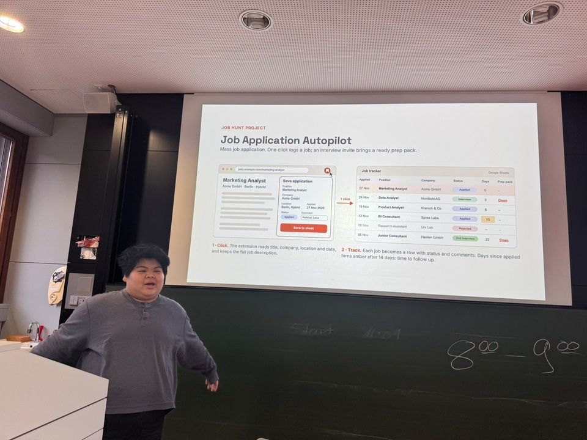
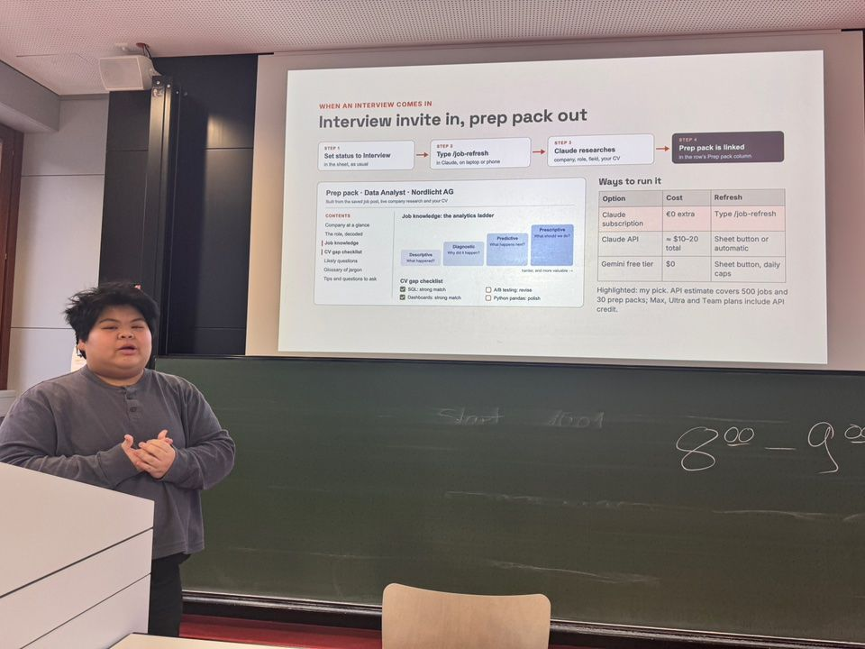
The project. Job hunting means applying at scale — and losing track. Claribel’s slogan: “Mass job application. One click logs a job; an interview invite brings a ready pack.” A browser extension reads the title, company, location and date from a job posting and keeps the full job description; one click on “Save to sheet” logs the job into a Google Sheets tracker with applied date, position, company, status and comments. The “days since applied” counter turns amber after 14 days — time to follow up.
The interview pack. When a row’s status flips to “Interview”, the candidate types /job-refresh in Claude (on laptop or phone); Claude researches the company, the role and the field, reads the CV, and links a prep pack into the row: company at a glance, the role decoded, a “job knowledge” ladder (descriptive → diagnostic → predictive → prescriptive analytics), a CV gap checklist (in her example: SQL and dashboards are strong matches; A/B testing needs revision; Python pandas needs polish), likely questions, a jargon glossary, and questions to ask them. She even costed the three ways to run it: the Claude subscription (€0 extra), the Claude API (≈ $10–20 in total — her pick; her estimate covers 500 jobs and 30 prep packs), or the Gemini free tier ($0, with daily caps).
Course concepts applied: Workflow automation · LLM research and document generation · spreadsheets as a lightweight app backend · cost-aware tool selection.
13. Manuel Lowien — Hand Music
Student ID 324033 · MMI · Portfolio: 324033.github.io

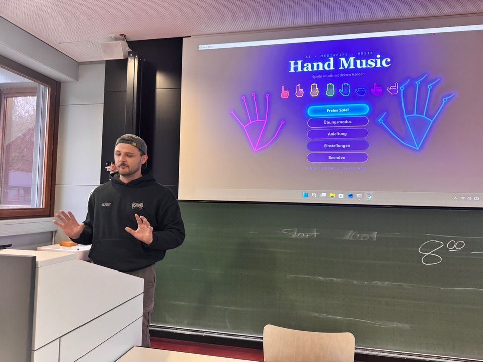
The project. “Spiele Musik mit deinen Händen” — play music with your hands. Hand Music is a rhythm game driven by MediaPipe hand tracking: a webcam watches the player’s hands, and each finger-sign corresponds to a note (the tiles at the bottom of the screen run C, D, E, F, G, A, H, C′). Notes fall down lanes in Guitar-Hero style; making the right sign at the right moment scores points and builds a combo, with immediate feedback (“Perfekt!”, “Gut”). Side panels show the live hand-skeleton tracking for the left and right hands and the next note to play, and the game even counts in by recognising held-up fingers (4-3-2-1).
Modes and content. The German-language UI offers free play (Freies Spiel), a practice mode (Übungsmodus), instructions and settings. The song library is children’s songs — the live demo used Alle meine Entchen (easy difficulty, 40 BPM, glockenspiel sound), and the library also shows Mary Had a Little Lamb, Twinkle Twinkle Little Star, Old MacDonald Had a Farm, Hänschen klein and Bruder Jakob. Manuel demonstrated it live in class, playing with his own hands while the score climbed.
Course concepts applied: Perception AI (real-time hand-landmark tracking) · human-computer interaction · AI applied to music and play.
14. Aaron Ipser — DB Navigator Next Gen
Student ID 336209 · MBA · Portfolio: 336209.github.io
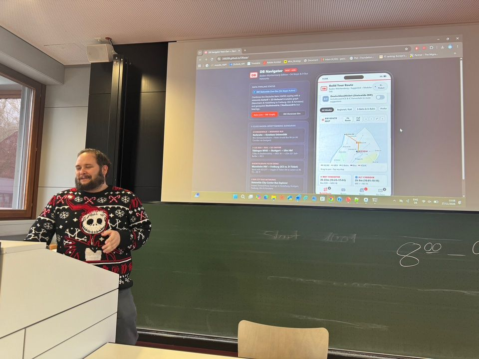
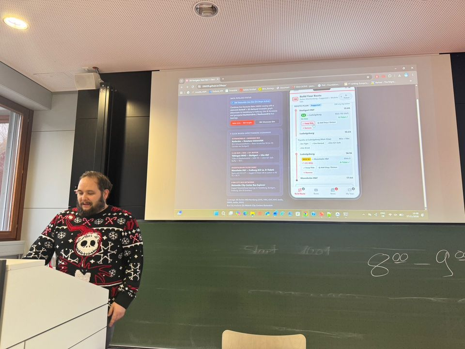
The project. Aaron reimagined Deutsche Bahn’s journey planner as a “Next Gen” concept for Baden-Württemberg. His prototype combines live DB HAFAS routing with a statewide dataset — the header advertises 64 stops and 8 bus networks, and the coverage line spans the state’s 23 transport associations (Verkehrsverbünde: VVS, VRN, KVV, RVF, bodo and more) — with a visible “data pipeline status” panel and one-click Baden-Württemberg scenario routes (for example Schwäbisch Hall to a business hub, Karlsruhe to a university town, Mannheim Hbf to Freiburg on an ICE, or a statewide city-centre bus explorer).
The experience. A modular route builder lets the traveller assemble a journey leg by leg (Stuttgart Hbf → Ludwigsburg by S-Bahn → Mannheim Hbf) with the Deutschlandticket in mind; the map view shows the best connection (2 h 22 min) against an alternative (2 h 56 min) with mode filters for regional rail, S-Bahn/U-Bahn and preferences. A “BW Rail & Bus News” tab, described as powered by an AI news ticker, turns raw disruption information into advice — for example a Stuttgart Hbf concourse advisory suggesting travellers allow an extra 15–25 minutes for cross-town connections, and an explainer that the Deutschlandticket and JugendBW ticket are valid across all regional rail and local buses statewide.
Course concepts applied: Working with live data and APIs · AI-generated information and advisory content · product prototyping.
Part 2 — Anonymous Course Feedback
Method. After the final presentations, students were invited to complete an anonymous Google Form with two open questions. The form collected no names and no email addresses, and signing in was not required. Each question received 20 responses — roughly 43% of the 47 students on the class list. One answer text appears twice under each question (in Q1, “I loved every part of this course! I really like the transition from manually using agentic ai to having the system being created automatically through advanced apps.”; in Q2, “I would not change a single thing about this course. The professor is an absolute genius…”). These are counted as submitted; they most likely reflect a duplicate submission, so the number of distinct respondents is probably 19–20. One Q2 response was signed voluntarily (“Sincerely, Alesia Musabelliu”) despite the form being anonymous.
20responses per question
≈43%of the 47-student class
11 / 20name agents as most useful (Q1)
9 / 20ask for no change at all (Q2)
Question 1 — “Which topic in this course did you find most useful? Why?”
Agents dominate. Eleven of the twenty responses name agents in some form as the most useful part of the course: agentic AI in general (2), personal agents (2), multi-agent skills, the Hermes agent, the Cue-based personal WhatsApp agent, and combinations such as “Agents, n8n, Hermes”. The recurring reason is agency over information: students valued learning to build a system that acts for them, not merely to prompt a model. One response put the trajectory of the whole course in a single sentence — the move “from manually using agentic ai to having the system being created automatically through advanced apps”.
“Everything” is the second answer. Five responses frame their answer as all of it — “All of the topics were so useful”, “All”, “EVERYTHING in this class was more than useful!” — and three of those five still single out agents on top. Closely related, three responses praise the breadth of the tool landscape: “We were introduced to so many tools which most of us had never heard of, this was the best part of the course!”
Specific tools named. n8n (2 responses), Hermes (2), Cue (2), GitHub and building one’s own website (1), Teachable Machine (1), getting more out of a paid Claude subscription (1), and AI video processing (1). One student named their own final project as the most useful topic, “because it combines multiple learnings of this course” — evidence that the project requirement itself functioned as a learning device.
“EVERYTHING in this class was more than useful! I can simply admit that this was the best course in my masters degree at Pforzheim University. I am glad and it was my honor to be taught by Professor Luarn and learn from a top professor/scientist.”
“The hermes agent, showing how we have access to different computer systems is amazingly new finding; how we connected different tools together.”
“Agents, n8n, Hermes because it is a very usefull skill to know how to build your own agent and will be more important in the future than just knowing LLM's.”
Question 2 — “What are your suggestions for this course? Which content or topics could be improved?”
Half the class asks for no change. Nine of the twenty responses are unqualified praise (“Nothing, it’s perfect!!”, “Everything perfect”, “I would not change a single thing about this course”, “it’s one of the clean course where all assignments are clearly packed. no complaints :)”), and a tenth pairs its suggestion with the note that everything learned was “incredibly interesting” and directly applicable. Several of these responses ask for more of the same course rather than a different one: “It’s really amazing this course, maybe you should teach a whole semester :)”.
The main improvement lever is time and pace (6 responses). The course ran as a compressed two-week block, and students felt it: requests to increase the duration, to spread “the workload and lecture hours … into 3 weeks instead of 2 weeks”, to leave more time in each unit to actually try the tools, to slow down on individual steps (“it can be hard to follow if anything is not working on your personal computer”), and to give tasks a little more context up front because the pace is fast. None of these responses asks for content to be removed; all ask for more room to absorb it.
Depth over breadth, at the margin (3 responses). Students who wanted more depth pointed at the same cluster as in Q1: delve further into agentic AI, put more focus on automation with n8n, and go deeper into skills and n8n “that can be applied more to a business environment”. One response (1) felt the balance the other way — that perception AI received more time than it needed.
Structure and prerequisites (2 responses). One student suggested capping participation at 20 so the professor can focus on each student; another suggested that basics such as using skills should be treated as assumed prior knowledge.
One point needs action — personal data in class exercises. A single response raises a privacy concern about the Hermes exercise: “Regarding topics like the Hermes case: using agents and requiring them to provide their mobile phone numbers was a very sensitive matter; such things should be handled on a voluntary basis, with prior notification that a mobile phone number will need to be provided.” It is the only critical point in the entire feedback set that concerns course process rather than content or pace, and it is easily addressed in future runs: announce any personal-data requirement in advance and make participation voluntary, with an alternative way to complete the exercise.
“The workload and lecture hours of this course should be distributed into 3 weeks instead of 2 weeks.”
“I would have liked to go even deeper into the units that have to do with skills and n8n that can be applied more to a business environment. But everything we learned in the class was incredibly interesting. I learned a lot in this class that I can actually apply in my personal and work life. Thank you!”
Overall conclusions
- Satisfaction is exceptionally high. Half of the respondents ask for no change at all, several call it the best course of their master’s degree, and the most common “suggestion” is to make the course longer or run it for a whole semester.
- The course’s centre of gravity, in students’ minds, is agents. A majority name agentic/personal/multi-agent systems as the most useful content, and the depth requests point the same way (agentic AI, n8n, skills). The final projects confirm it: most of the fourteen presenters built an agent or an automated pipeline.
- Pacing is the price of the format. A two-week block covering perception, generative and agentic AI plus a build-your-own project is dense; spreading the same content over three weeks, or adding structured hands-on time per unit, is the clearest improvement for a future run.
- One process fix: any exercise that requires students’ personal data (such as a mobile phone number for a messaging agent) should be announced in advance and be voluntary.